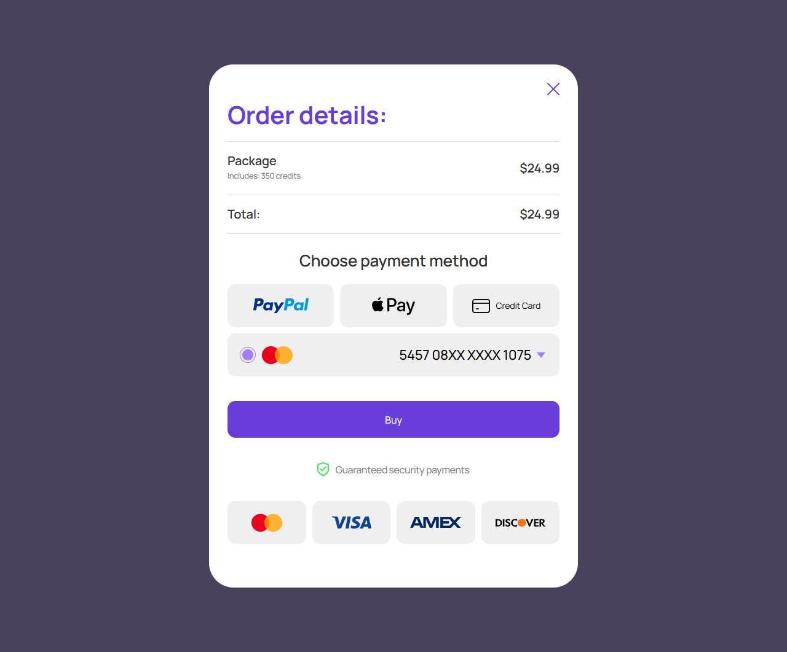
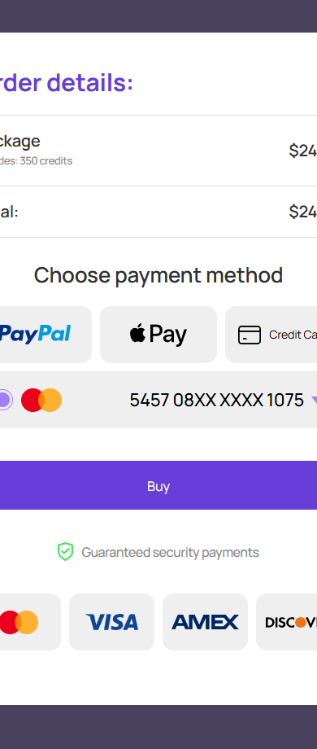

Проверка заказа
account/checkout-order-review.html
Проверить сумму, пакет и способ до платежа.
| Когда открывается | Выбор пакета |
|---|---|
| Данные | orderId/version; credits; amount/currency; допустимые способы. |
| Сценарий | Выбор метода → подготовка PSP; Buy → одна подтверждаемая попытка; Close сохраняет известный status заказа. |
| Переходы | Реквизиты оплаты · Ошибка заказа |
Общая и предметная логика. Снимки и подписи элементов — исходная редакция макета; поздние уточнения ТЗ имеют приоритет в своей области. Это не проверка текущего сайта.
Сопоставление с AskNebula
Существующие наблюдения 07–09.10.2026, без повторной проверки в этой передаче.
Нужна отдельная сверка соответствующего экрана/состояния референса. Отсутствие аналога не установлено.
Состояние 1280 · 1280 × 1062


Элементы и ожидаемые действия
| Элемент | Название в макете | Действие | Ожидаемый результат |
|---|---|---|---|
| E001 Скрыт в этом состоянии | Upstream funding state | Информационный блок/область фокуса, не самостоятельная команда. | Показывать актуальные данные соответствующего сценария; фокус или чтение не выполняют мутацию. |
| E002 Виден | Close order details | Закрыть локальное окно или вернуться к инициатору; Stay отменяет намерение завершить. | Вернуть фокус и исходный контекст. Не выполнять оплату, удаление или Complete. При неизвестном результате платежа сначала сверить заказ. |
| E003 Виден | PayPal | Выбрать разрешенный провайдером способ оплаты для текущего заказа. | Не списывать автоматически; при ошибке сначала сверить исходную попытку. Показать метод только при реальной поддержке. |
| E004 Виден | Apple Pay | Выбрать разрешенный провайдером способ оплаты для текущего заказа. | Не списывать автоматически; при ошибке сначала сверить исходную попытку. Показать метод только при реальной поддержке. |
| E005 Виден | Credit Card | Выбрать разрешенный провайдером способ оплаты для текущего заказа. | Не списывать автоматически; при ошибке сначала сверить исходную попытку. Показать метод только при реальной поддержке. |
| E006 Виден | Saved Mastercard 5457 08XX XXXX 1075 | Выбрать разрешенный провайдером способ оплаты для текущего заказа. | Не списывать автоматически; при ошибке сначала сверить исходную попытку. Показать метод только при реальной поддержке. |
| E007 Виден | Choose another saved payment method | Выбрать разрешенный провайдером способ оплаты для текущего заказа. | Не списывать автоматически; при ошибке сначала сверить исходную попытку. Показать метод только при реальной поддержке. |
| E008 Виден | Buy | Подтвердить текущий пакет/заказ по сценарию «Проверка заказа». | Одна попытка платежа; pending/success/failure различаются. Success только по серверу. Пополнение не запускает консультацию. |
Состояние 390 · 390 × 920


Элементы и ожидаемые действия
| Элемент | Название в макете | Действие | Ожидаемый результат |
|---|---|---|---|
| E001 Скрыт в этом состоянии | Upstream funding state | Информационный блок/область фокуса, не самостоятельная команда. | Показывать актуальные данные соответствующего сценария; фокус или чтение не выполняют мутацию. |
| E002 Виден | Close order details | Закрыть локальное окно или вернуться к инициатору; Stay отменяет намерение завершить. | Вернуть фокус и исходный контекст. Не выполнять оплату, удаление или Complete. При неизвестном результате платежа сначала сверить заказ. |
| E003 Виден | PayPal | Выбрать разрешенный провайдером способ оплаты для текущего заказа. | Не списывать автоматически; при ошибке сначала сверить исходную попытку. Показать метод только при реальной поддержке. |
| E004 Виден | Apple Pay | Выбрать разрешенный провайдером способ оплаты для текущего заказа. | Не списывать автоматически; при ошибке сначала сверить исходную попытку. Показать метод только при реальной поддержке. |
| E005 Виден | Credit Card | Выбрать разрешенный провайдером способ оплаты для текущего заказа. | Не списывать автоматически; при ошибке сначала сверить исходную попытку. Показать метод только при реальной поддержке. |
| E006 Виден | Saved Mastercard 5457 08XX XXXX 1075 | Выбрать разрешенный провайдером способ оплаты для текущего заказа. | Не списывать автоматически; при ошибке сначала сверить исходную попытку. Показать метод только при реальной поддержке. |
| E007 Виден | Choose another saved payment method | Выбрать разрешенный провайдером способ оплаты для текущего заказа. | Не списывать автоматически; при ошибке сначала сверить исходную попытку. Показать метод только при реальной поддержке. |
| E008 Виден | Buy | Подтвердить текущий пакет/заказ по сценарию «Проверка заказа». | Одна попытка платежа; pending/success/failure различаются. Success только по серверу. Пополнение не запускает консультацию. |